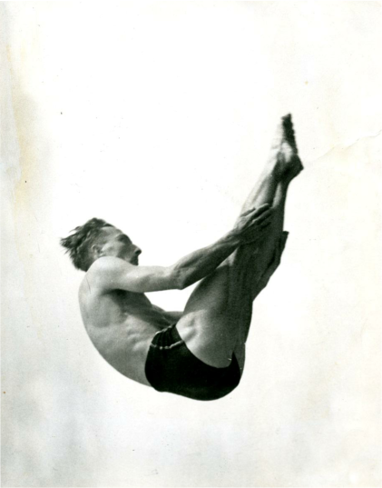
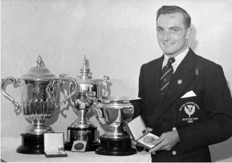
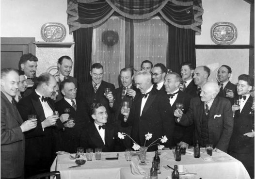
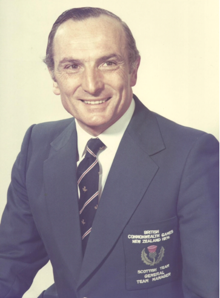

Sir Peter Heatly
A memorial plaque celebrating the achievements of Sir Peter Heatly has been hung in the Refreshment Room in Portobello Swim Centre. A member of Portobello Amateur Swimming Club (ASC), Sir Peter won many medals as an accomplished diver.

Peter’s family came from Leith where he attended Leith Academy and he later studied engineering at the University of Edinburgh. When they moved to Portobello Peter made good use of Portobello Baths and taught himself to dive. He dominated the sport for over 20 years. He won the East of Scotland Championship in 1937, the first of many wins, and was Scottish champion from 1946 to 1958. Peter won medals in three consecutive Commonwealth Games: gold for the 10 metre platform and silver in the three metre springboard in Auckland in 1950, gold for the three metre springboard and bronze in the 10 metre platform in Vancouver in 1954 and gold in the 10 metre springboard in Cardiff in 1958, where he was Scotland Team Captain. In the European Games in Turin in 1954 he won bronze for the 10 metre platform. Peter also competed in the Olympic Games in London in 1948 and Helsinki in 1952.

He always maintained his connection with Portobello ASC and was made a Life Member in 1949. He was President from 1952 to 1957. The club held a dinner for Peter in 1950.

Following his successful diving career, Peter moved into sports management and, amongst other roles, was Chairman of the Commonwealth Games Council for Scotland, Scottish Sports Council and Commonwealth Games Federation for various periods between 1967 and 1990. He was involved with the planning and design of the Royal Commonwealth Pool, which has an Olympic standard diving pool and is the only venue to have been used for three Commonwealth Games. He attended its opening for the 1970 Games in Edinburgh. A plaque has also been erected there and a meeting room renamed in his honour.

Peter was awarded the CBE in 1971, made a Deputy Lieutenant of the City of Edinburgh in 1984 and knighted in 1990. Sir Peter was inducted into the Scottish Sports Hall of Fame in 2002, the Scottish Swimming Hall of Fame in 2010 and, posthumously, into the International Swimming Hall of Fame in 2016. An internationally recognised athlete and diver, Sir Peter died aged 91 in September 2015.
Photographs courtesy of Peter Heatly.